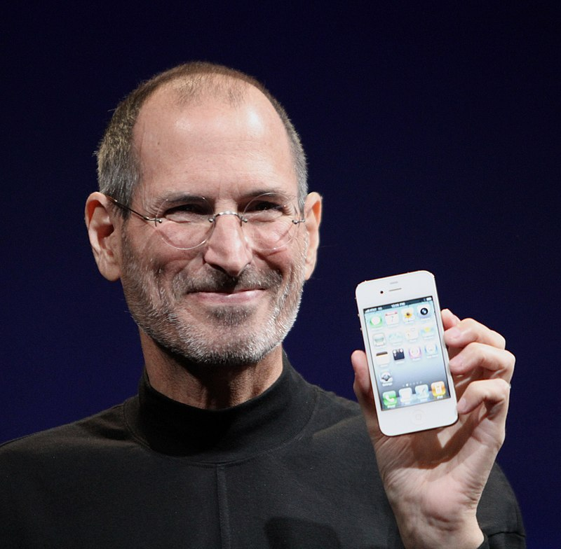

Сті́вен Пол Джобс (англ. Steven Paul Jobs, Steve Jobs; 24 лютого 1955, Сан-Франциско, Каліфорнія, США[14] —
5 жовтня 2011) — американський підприємець і винахідник.
Був засновником, членом ради директорів і CEO (генеральним директором) корпорації
Apple Inc..
Джобс також раніше займав посаду CEO компанії Pixar Animation Studios;
в 2006 році The Walt Disney Company
придбав Pixar і Джобс став членом ради директорів Disney. У 1995 році в мультфільмі «Історія іграшок» він був
зазначений як виконавчий продюсер.
Наприкінці 1970-х Джобс зі співзасновником компанії Apple
Стівом Возняком
створили один з перших комерційно
успішних персональних комп'ютерів. На початку 1980-х Джобс був одним з перших, хто побачив потенціал керованого
мишкою графічного інтерфейсу користувача, що призвело до створення Macintosh. Втративши владу в боротьбі з радою директорів 1985 року, Джобс був звільнений з Apple і організував NeXT, яка
спеціалізувалася на ринках бізнесу та вищої освіти. У 1996 році Apple придбав NeXT, а Джобс повернувся в
компанію, яку співзаснував, і пробув її CEO з 1997 по 2011 роки. У журналі «Fortune» Стів Джобс був названий
найвпливовішим підприємцем 2007 і потрапив до списку топ-менеджерів 2009.
1986 року Стів купив у Lucasfilm студію комп'ютерної графіки The Graphics Group, пізніше перейменовану
в «Pixar». Він був її генеральним директором і основним акціонером до придбання її «Уолтом Діснеєм» 2006 року.
До кінця свого життя Джобс був акціонером та членом ради директорів «The Walt Disney Company».
Після його смерті, 24 жовтня 2011 року вийшла його біографія «Стів Джобс».
Втративши владу в боротьбі з радою директорів 1985 року, Джобс був звільнений з Apple і організував NeXT, яка
спеціалізувалася на ринках бізнесу та вищої освіти. У 1996 році Apple придбав NeXT, а Джобс повернувся в
компанію, яку співзаснував, і пробув її CEO з 1997 по 2011 роки. У журналі «Fortune» Стів Джобс був названий
найвпливовішим підприємцем 2007 і потрапив до списку топ-менеджерів 2009.
1986 року Стів купив у Lucasfilm студію комп'ютерної графіки The Graphics Group, пізніше перейменовану
в «Pixar». Він був її генеральним директором і основним акціонером до придбання її «Уолтом Діснеєм» 2006 року.
До кінця свого життя Джобс був акціонером та членом ради директорів «The Walt Disney Company».
Після його смерті, 24 жовтня 2011 року вийшла його біографія «Стів Джобс».